Introducción
Las hojas de estilo o CSS son un estandar de la W3C para aplicar distintos estilos, formatos y caracteristicas a los documentos como HTML.
En la practica son ficheros de texto en los que se van definiendo propiedades concretas para los elementos de una página. Esto ahorra espacio y trabajo en el desarrollo de la misma.
Inserción de estilos "STYLE"
Ademas de añadir estilos desde CSS, también podemos hacerlo desde HTML.
Hoy en dia esta técnica esta casi obsoleta, ya que sobre carga el código HTML dificultando su lectura.
Para llevar acabo esta practica usaremos la etiqueta style, la podemos usar como atributo a cualquier elemento o en el head de nuestra página para añadir los estilos.

Hojas de estilo externas "LINK"
Esta técnica es la más usada, ya que es conveniente usar una hoja de estilos definida externamente al HTML, para enlazarla con este, usaremos la etiqueta link, esta la definiremos en el head de nuesta página.

Clasede estilos y atributo class
Cuando queremos aplicar estilos diferentes a distintos parrafos, podemos usar en los elementos HTML el atributo class, Con esto establecemos una clase a ese elemento.
Para poder dar uso en CSS a estas clases dentro de documento CSS debemos usar un punto delante el nombre que le hayamos puesto en el elemento a la clase.
En la partica el resultado seria este:


Identificador de estilos y atributo ID
Cada elemento en nuestra pagina web, podemos identificarlo con un id, un ejemplo practico es cuando tenemos varios parrafos y queremos darle un estilo concreto a alguno de ellos.
Para usamos el atributo id, en CSS lo utilizaremos con una # seguido del nombre de esa id para darle estilos.
En la partica el resultado seria este:


Pseudo-Clases
Las Pseudo-Clases van un poco más allá de los estilos y permiten controlar elementos circunstanciales de la pagina HTML.
Las palabras :hover, :visited, :link, :active son pseudoclases que se pueden añadir a los estilos para controlar esas circunstancias.
Encontramos varios tipos de estas Pseudoclases.
Pseudo-Clases Dinámicas
Estas pseudo-clases se utilizan para controlar ciertas circunstancias, como por ejemplo aclarar que un enlace ya se ha visitado en la página o que esté inactivo o incluso dar estilo a un elemento cuanto el puntero del ratón se sitúe encima del elemento.
Aparte de lo nombrado anteriormente existen otros tipos de elementos:
- :link → link no visitado
- :visited → link visitado
- :active → representa el elemento que el usuario está activando. Cuando se usa el ratón, la activación, generalmente comienza cuando el usuario presiona el botón primario y termina cuando se suelta. Se usa normalmente con a y button.
- :hover → al poner el ratón sobre el elemento.
- :focus → cuando el elemento recibe el foco.
Un ejemplo:

Pseudo-Clases de Estado
Como su propio nombre indica, estas se usan para remarcar el estado de un elemento de formulario, como por ejemplo si el elemento está desactivado o activado.
Además, hay otros tipos como:
- :enabled → se aplica a todos los campos del formulario que estén activados.
- :disabled → para los desactivados. Para desactivarlos hay que aplicar específicamente DISABLED.
- :checked → representa cualquier radio, checkbox u option que está marcado o conmutado a un estado on.
- :in-range → representa un elemento input cuyo valor actual se encuentra dentro de los límites de rango especificados por los atributos min y max.
- :out-of-range → fuera de los límites de rango.
- :required → representa cualquier elemento input, select o textarea que tenga el atributo required establecido en él.
- :optional → representa cualquier elemento input, select o textareaque NO tenga el atributo required establecido en él.
- :valid → representa cualquier elemento o del formulario cuyo contenido se valide satisfactoriamente. Esto permite que los campos válidos adopten fácilmente una apariencia que ayuda al usuario a confirmar que sus datos están formateados correctamente.
- :invalid → representa cualquier elemento u otro elemento cuyos contenidos no se puedan validar.
- :read-only → para campos de solo lectura.
- :read-write → para campos de lectura y escritura que son la mayoría.
Un ejemplo:

Pseudo-Clases de Estructura
Para este apartado tenemos dos tipos:
- :root → selecciona el elemento raíz de un árbol que representa el documento. En HTML, :root representa el elemento y es idéntico al selector html, excepto que su especificidad es mayor.
- :empty → representa cualquier elemento que no tenga hijos. Los hijos pueden ser nodos de elemento o texto (incluido el espacio en blanco). Los comentarios o las instrucciones de procesamiento no afectan si un elemento se considera vacío.
Un ejemplo:

Pseudo-Clases de Child
Controlan los elementos hijos de un elemento padre html. Tenemos varios tipos:
- :first-child → representa el primer elemento entre un grupo de elementos hermanos.
- :last-child → representa el último elemento entre un grupo de elementos hermanos.
- :nth-child(n) → selecciona al hijo n (independientemente del tipo de etiqueta).
- :nth-last-child(n) → selecciona el hijo n empezando a contar desde el final.
- :only-child → representa un elemento sin hermanos.
Un ejemplo:

Pseudo-Clases de Type
Se utiliza cuando tenemos que seleccionar un elemento y tiene que ser con la etiqueta que digamos.
Tenemos varios tipos:
- :first-of-type → representa el primer elemento de su tipo entre un grupo de elementos hermanos.
- :last-of-type → último.
- :nth-of-type(n) → selecciona uno o más elementos de un tipo dado, en función de su posición entre un grupo de hermanos.
- :nth-last-of-type(n) → coincide con uno o más elementos de un tipo dado, en función de su posición entre un grupo de hermanos, contando desde el final.
- :only-of-type → representa un elemento que no tiene hermanos del mismo tipo.
Un ejemplo:

Pseudo-Clases de navegación
Encontramos un solo tipo:
- :not → selecciona un elemento que no cumpla la condición, se puede poner cualquier selector salvo otro :not.
Un ejemplo:

Selectores de atributos
Desde CSS3 ya se pueden aplicar estilo a los atributos de las etiquetas.
Esto da opción a utilizar tanto los atributos como incluso los valores que tienen esos atributos para aplicar los estilos que queramos.
Poniendo la práctica, este sera un ejemplo:
Esto es un enlace a Google


Como vemos su expresión es sencilla, colocamos en CSS el elemento, id o clase y entre corchetes el atributo al que queramos darle estilo.
Flexbox
FLEX y GRID son dos nuevos valores (HTML5) que vamos a poder dar a la propiedad CSS display y que nos van a permitir, junto con otras propiedades, maquetar nuestras páginas web de una manera más fácil a la que se usaba tradicionalmente.
Vamos a tener dos elementos:
- Contenedor
- Items
Lo primero que hay que hacer es darle un valor a la propiedad DISPLAY del contenedor. Existen dos valores posibles:
- Display: flex → Permite que el contenedor sea de bloque. Similar a block, ocupa todo el ancho del padre.
- Display:inline-flex → Permite que el contenedor sea de línea. Similar a inline-block, ocupa solo el contenido.
Elementos de la maquetación Flex
Contenedor: es el elemento padre que tendrá en su interior cada uno de los ítems flexibles.
En Flex establecemos las propiedades al elemento padre y se modificará la posición de los elementos flexibles dentro de él.
- Eje Principal: los contenedores flexibles tendrán una orientación principal específica. Por defecto es en horizontal (en fila).
- Eje Secundario: los contenedores también tendrán una orientación secundaria, perpendicular a la principal. Si la principal es en horizontal, la secundaria será en vertical y viceversa.
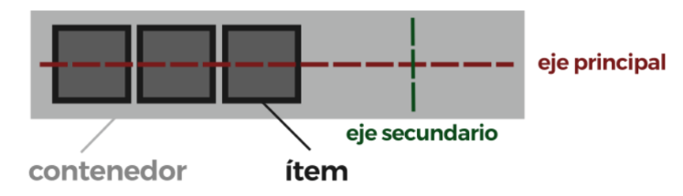
Ítems: cada uno de los hijos flexibles que tendrá dentro el contenedor en su interior.
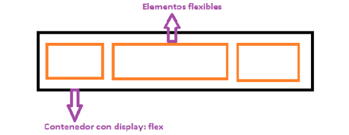
Las cajas flexibles son los ítems o hijos directos del contenedor, el contenedor es el contexto al que pertenecen los ítems.
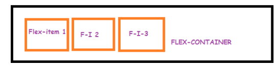
Elementos considerados flexibles dentro de un contenedor display:flex:
- Si tenemos un DIV con un display:flex con un AFTER o BEFORE (pseudoelementos) éste será flex-item que podremos controlar porque serán flexibles.
- El texto también se considera un hijo del contenedor. Ej: si tenemos un div con display:flex y dentro del div “Hola a todos”. Esta será una caja flexible aunque técnicamente no sea caja sino texto.
Dirección de los elementos flexibles
Como ya hemos visto anteriormente, existen 2 ejes para colocar los elementos:
- EJE PRINCIPAL
- EJE CRUZADO O SECUNDARIO
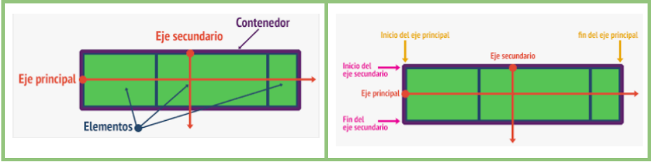
Utilizando la propiedad FLEX-DIRECTION podemos modificar la dirección del eje principal del contenedor para que se oriente en horizontal (por defecto) o en vertical. Los cuatro posibles valores son:
- row (default): dirección del eje principal horizontal.
- row-reverse: dirección del eje principal horizontal invertido.
- column: dirección del eje principal en vertical.
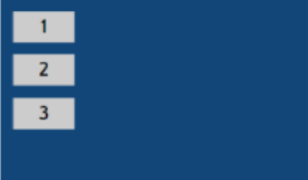
- column-reverse: dirección del eje principal en vertical invertido.
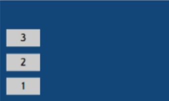
Ajuste de los elementos flexibles (si no caben)
Se realiza con la propiedad FLEX-WRAP.
- nowrap (default): establece los ítems en una sola línea.
- wrap: los elementos flexibles se disponen en múltiples líneas si no caben. De arriba a abajo. Modo multilínea.
- wrap-reverse: lo mismo que el anterior pero de abajo a arriba. Modo multilínea.
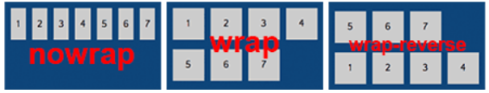
FLEX-FLOW (juntando la dirección y el ajuste)
flex-flow: flex-direction flex-wrap;
ALINEACIONES
JUSTIFY-CONTENT: se utiliza para alinear los ítems del eje principal (por defecto, el horizontal).
Los posibles valores son:
- flex-start
- flex-end
- center
- space-between
- space-around
- space-evently
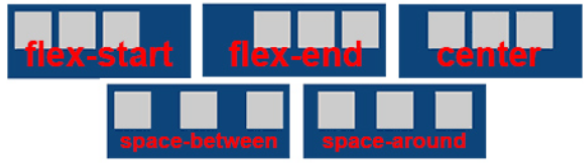
ALIGN-ITEMS: usada para alinear los ítems del eje secundario (por defecto el vertical).
- flex-start
- flex-end
- center
- strech
- baseline
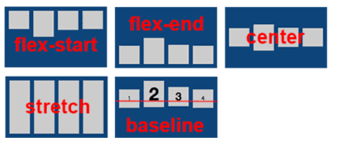
Alineación Vertical-Wrap (tengo varias líneas de elementos flexibles)
Alineación vertical cuando hay varias líneas. ALIGN-CONTENT
- flex-start
- flex-end
- center
- stretch
- space-between
- space-around
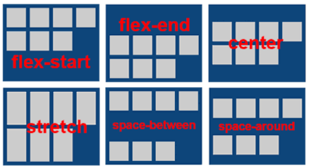
Orden
Permite modificar el orden normal en el que se van a mostrar los elementos flexibles añadiendoles la propiedad CSS ORDER. Solo afecta a la representación visual de los elementos.
A diferencia del resto de propiedades, ésta si se le aplica al elemento flexible. Puede tomar cualquier valor entero y su valor por defecto es el 0.
Los elementos estarán dispuestos en orden ascendente según el valor de order. En caso de empate el que estuviera antes en el código.
Tamaño de elementos flexibles
Propiedades que permiten modificar el tamaño de los elementos flexibles.
- flex-grow → el factor de crecimiento de un elemento flexible cuando se distribuye el espacio restante . Por defecto 1 pero se debe indicar en todos.
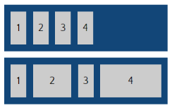
- flex-shrink → el factor de reducción de un elemento flexible cuando sobrepasan el tamaño del contenedor. Por defecto 1 pero se debe indicar en todos.
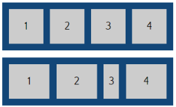
- flex-basis → tamaño de un elemento antes de que el espacio restante (negativo o positivo) se distribuya. (auto por defecto).
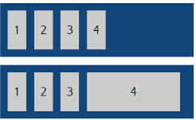
Alineación vertical individual (a uno de los elementos flexibles)
Desde el contenedor FLEX, si queremos que un elemento tenga alineación propia ALIGN-SELF. Se le añade esta propiedad al elemento flexible en cuestión.
ALIGN-ITEMS lo utilizábamos para la alineación vertical de todos los elementos flexibles a la vez.
Sobreescribe a ALIGN-ITEMS.
- flex-start
- flex-end
- center
- strench
- baseline
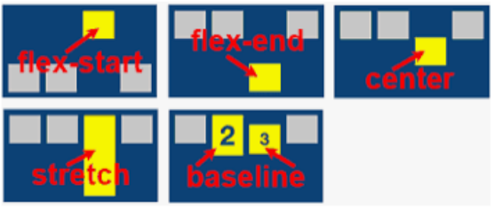
Transiciones
Las transiciones son uno de los efectos más utilizados hasta ahora, y hace rivalidad a la pseudoclase hover. Las transiciones permiten aplicar estilos diferentes entre estados de una manera más amplia.
Una de las ventajas de usar transiciones es que se puede utilizar una medida de tiempo a través de la cual se aplica el cambio de estilo.
Hay varios elementos que componen la transición:
- all: se aplica a todos los estilos cambiantes.
- 1s: segundos que tarda la transición.
- ease: modo en que se produce la transición.
- 0s: es un retardo que se puede aplicar para que se empiece a aplicar la transición.
Cada uno de estos valores se puede especificar en las siguientes propiedades:
- transition-property: indica a qué atributos aplicamos la transición.
- transition-duration: tiempo de duración de la transición.
- transition-timing-function: la forma de ir cambiando con las opciones: ease, linear, ease-in, ease-out, ease-in-out, cubic-bezier.
- transition-delay: puede ponerse un valor de retardo, incluso negativo, para que la transición se aplique con un efecto de que ya ha progresado.
Es posible también aplicar diferentes transiciones en momentos de tiempo distintos simplemente creando una lista en las propiedades transition-property y transition-duration.
Transformaciones
Las transformaciones son mecanismos relativamente simples ya que no hacen sino aplicar un cambio de estilo gradual, pero los estilos siguen siendo los estilos conocidos hasta ahora.
Podemos aplicar las transiciones de la siguiente manera:
- Scale: cambia de tamaño los elementos.
- Translate: cambia de posición a izquierda, derecha, arriba o abajo.
- Rotate: gira o hace rotar elementos en determinados grados.
- Skew: distorsiona los elementos.
- Matrix: permite mover y transformar con precisión de píxel.
Además de estas transformaciones que se basan en el eje central existen otras. Mediante la propiedad transform-origin se puede cambiar ese punto con dos valores que modifican el cambio en el eje horizontal y vertical.
También existen transformaciones 3D, estas ofrecen todo un mundo de posibilidades. En este caso es bastante probable que les afecte las limitaciones de los dispositivos donde se ejecuten, ya que los requerimientos de la tecnología 3D son elevados.
Animaciones
Las animaciones que introduce CSS3 se basan en el sistema de keyframes, algo que debería resultar familiar a Flash. En ese tipo de herramientas se contaba con líneas temporales donde se iban aplicando distintas transformaciones.
Para aplicar esto usaremos la etiqueta animation y al igual que las anteriores nombradas, esta de desglosa en otras más concretas:
- animation-name: nombre de la animación definida previamente.
- animation-duration: tiempo de animación en segundos, permitiendo fracciones.
- animation-timing-function: función de animación, como las vistas en las transiciones, ease, ease-in, etc.
- animation-iteration.count: número de iteraciones de animación pudiendo ser infinito.
- animation-play-state: estado de la animación.
- animation-delay: retardo para el inicio de la animación en segundos.
- animation-fill-mode: modo de relleno.
Media-Queries
Las Media Queries son un mecanismo introducido en CSS3 que permiten aplicar estilos según el tipo de medio en el que se muestran los documentos. A través del selector @media y aplicando distintas condiciones como el ancho del medio, colores, etc.
Hay que tener en cuenta el amplio abanico de pantallas, que van desde 4 hasta 42 pulgadas.
TIPOS DE MEDIOS
La etiqueta media reconocen varios tipos de medios predefinidos, al margen de sus propiedades, estas son:
- all: todos los tipos de medios.
- print: impresoras.
- screen: pantallas de ordenadores, tablets, móviles, etc.
- speech: para lectores de pantalla.
CONDICIONES
Además del ancho existen una gran variedad de condiciones para aplicar determinado tipo de estilos a un documento.
Entres las diferentes condiciones, las encontramos de forma genérica, como mínimos o como máximos y otras muchas más, a continuación vamos a nombrar algunas de ellas:
- aspect-ratio: indica el ratio de anchura y altura del viewport.
- color-index: indica el número de colores que el dispositivo puede mostrar.
- device-height: indica el alto del dispositivo de salida.
- max-monochrome: indica el máximo de bits por color en un dispositivo monocromo.
- min-width: indica el ancho mínimo de la pantalla.
- orientation: indica la orientación de la pantalla (landscape o portrait).
- scan: indica el proceso de escaneo del dispositivo de salida.
OPERADORES LÓGICOS
Al igual que en los lenguajes de programación, las media queries permiten el uso de expresiones similares a las usadas para crear expresiones condicionales.
Tenemos varios tipos:
- Operadores AND
- Operador OR
- Operador NOT
GRID
Es un sistema de maquetación considerado más potente que flexbox ya que permite trabajar con filas y columnas y no en una dimensión como hace flexbox.
Se compone de dos elementos:
- Contenedor GRID: display:grid (comportamiento contenedor de bloque), display:inline-grid (comportamiento contenedor de línea)
- Elementos del grid o ítems hijos directamente descendientes del contenedor grid serán los que colocaremos.
ESTRUCTURA DEL GRID
Es necesario crear la estructura del grid especificando cuántas columnas y filas va a tener el contenedor. Para ello:
1.- Dar al contenedor grid la propiedad Display: Grid/Inline-grid.
2.- Aplicar la estructura al contenedor:
- grid-template-columns: número de columnas del grid y tamaño de las mismas.
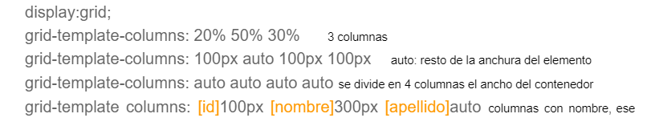
- grid-template-rows: número de filas del grid y tamaño de las mismas.
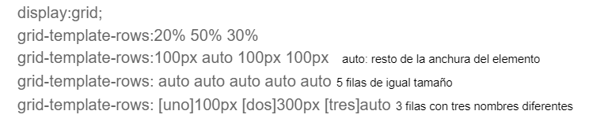
- row-gap: separación entre filas.
- column-gap: separación entre columnas.
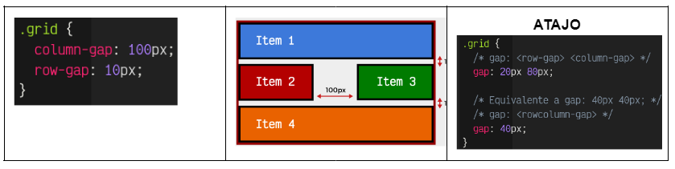
DISPOSICIÓN DE LOS ELEMENTOS
Los elementos se colocan solos pero también podemos colocarlos.Para especificar el área a ocupar el elemento (hijo directo) utilizamos las siguientes propiedades:
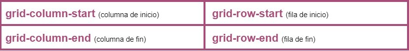
Se pueden juntar estas propiedades:
- grid-column:start/end;
- grid-row: start/end;
- grid: row-start column-start row-end column-end;
Disposición de los elementos con ÁREAS GRID (utilizando nombres)
Si no queremos especificar el tamaño para cada elemento del GRID podemos darles nombre a su propiedad grid-area y usar esos nombres en la propiedad grid-tamplate-area.
Etiquetas:
- grid-template-areas → Al contenedor (container, main…)
- grid-area → A cada sección de nuestra web le asignamos un grid-area.
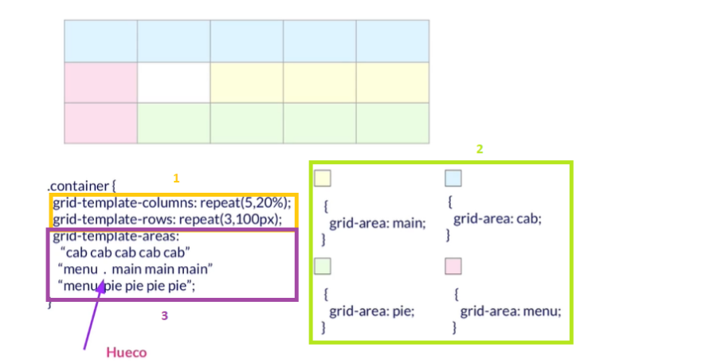
ALINEACIÓN HORIZONTAL (dentro de la celda)
Para alinear horizontalmente el contenido que hay dentro de cada celda se usará la propiedad CSS JUSTIFY-ITEMS. Valores: stretch por defecto
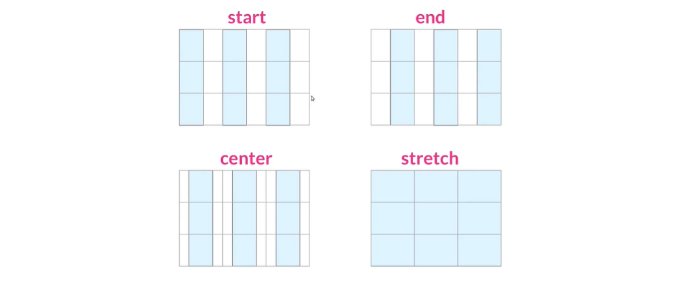
ALINEACIÓN VERTICAL (dentro de la celda)
Para alinear verticalmente el contenido que hay dentro de cada celda se usará la propiedad CSS ALIGN-ITEMS. Valores:
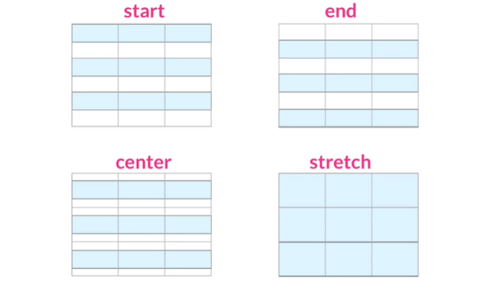
Se pueden juntar las dos alineaciones anteriores con la propiedad PLACE-ITEMS. place-item: vertical horizonta
En el caso de que queramos que uno de los ítems hijos tengan una distribución diferente al resto, aplicamos la propiedad JUSTIFY-SELF o ALIGN-SELF sobre el ítem hijo y esto sobreescribe su distribución.
DISTRIBUCIÓN DENTRO DEL CONTENEDOR
En el caso de que el GRID no ocupe todo el ancho de la página podemos distribuirlo con las propiedades CSS JUSTIFY-CONTENT (horizontal) y ALIGN-CONTENT (vertical).
- JUSTIFY-CONTENT: respecto al ancho de la página en la que está.
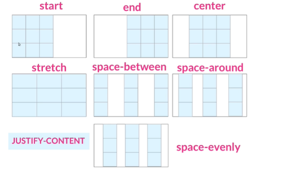
- ALIGN-CONTENT: respecto al alto de la página en la que están.
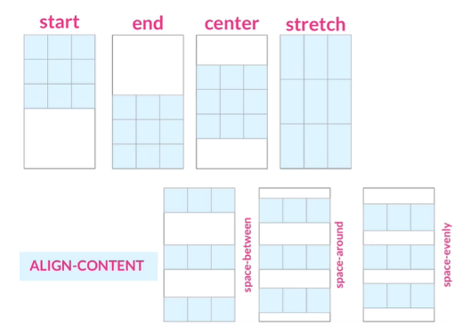
- PLACE-CONTENT: place-content: vertical horizontal o place-content: start end.
COLOCACIÓN IMPLÍCITA
La colocación implícita de los elementos GRID es lo que sucede cuando colocamos elementos grid fuera de la estructura que se ha definido en el contenedor grid o cuando no les damos posición.
Propiedades aplicamos al contenedor:
- grid-auto-columns: anchura que se le da a las columnas de fuera de la estructura.
- grid-auto-rows: altura de las filas de fuera del grid.
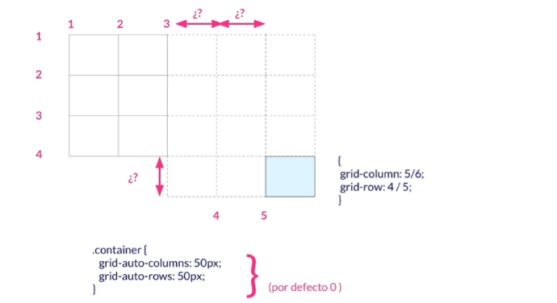
- grid-auto-flow: si tengo elementos sin definir una colocación en el contenedor grid, esta propiedad define cómo se van a colocar esos elementos. Valores:
- row: rellena las filas primero (opción por defecto).
- column: rellena las columnas primero.
- dense: intenta rellenar primero los huecos si tiene elementos más pequeños. Puede cambiar el orden de los elementos así que hay que tener cuidado.